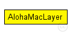
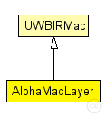

This documentation is released under the Creative Commons license
This documentation is released under the Creative Commons license(no description)
The following diagram shows usage relationships between types. Unresolved types are missing from the diagram. Click here to see the full picture.
The following diagram shows inheritance relationships for this type. Unresolved types are missing from the diagram. Click here to see the full picture.
| Name | Type | Description |
|---|---|---|
| UWBIRMac | simple module |
This class provides helper function for MAC modules that use the UWB-IR IEEE 802.15.4A model. Just before sending down a packet to the UWBIRPhyLayer, call prepareData(UWBIRMacPkt* packet). Just after receiving a packet from the UWBIRPhyLayer, call validatePacket(UWBIRMacPkt* packet) and check the returned bool value to know if the packet could be decoded successfully. |
| Name | Type | Default value | Description |
|---|---|---|---|
| notAffectedByHostState | bool | false | |
| coreDebug | bool | false |
debug switch |
| headerLength | int |
length of the MAC packet header (in bits) |
|
| address | string | "auto" |
MAC address as hex string (12 hex digits), or "auto". "auto" values will be replaced by a generated MAC address in init stage 1. |
| debug | bool | false |
debug switch |
| stats | bool | true | |
| trace | bool | false | |
| RSDecoder | bool | true | |
| packetsAlwaysValid | bool | false | |
| PRF | int | 4 |
Pulse repetition frequency, either 4 or 16 MHz currently |
| maxRetries | double | ||
| minBE | int | 3 |
min backoff exponent |
| maxBE | int | 8 |
max backoff exponent |
| Name | Value | Description |
|---|---|---|
| class | AlohaMacLayer |
| Name | Direction | Size | Description |
|---|---|---|---|
| upperLayerIn | input |
from upper layer |
|
| upperLayerOut | output |
to uppe layer |
|
| upperControlIn | input |
control from upper layer |
|
| upperControlOut | output |
control to upper layer |
|
| lowerLayerIn | input |
from lower layer |
|
| lowerLayerOut | output |
to lower layer |
|
| lowerControlIn | input |
control from lower layer |
|
| lowerControlOut | output |
control to lower layer |
simple AlohaMacLayer extends UWBIRMac { parameters: double maxRetries; int minBE = default(3); // min backoff exponent int maxBE = default(8); // max backoff exponent @class(AlohaMacLayer); }
This documentation is released under the Creative Commons license